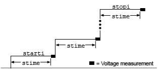

|
|
|
SweepILogMeasureV()
This KISweep factory script function performs a logarithmic current sweep with voltage measured at every step (point).
Type |
TSP-Link accessible |
Affected by |
Where saved |
Default value |
Function |
No |
|
|
|
Usage
SweepILogMeasureV(smu, starti, stopi, stime, points)
smu |
System SourceMeter® instrument channel (set to |
starti |
Sweep start current in amperes |
stopi |
Sweep stop current in amperes |
stime |
Settling time in seconds; occurs after stepping the source and before performing a measurement |
points |
Number of sweep points (must be ³2) |
Details
Data for voltage measurements, current source values, and timestamps are stored in smuX.nvbuffer1.
If all parameters are omitted when this function is called, this function is executed with the parameters set to the default values.
Performs a logarithmic current sweep with voltage measured at every step (point):
1. Sets the smu to output starti amperes value, allows the source to settle for stime seconds, and then performs a voltage measurement.
2. Sets the smu to output the next amperes step, allows the source to settle for stime seconds, and then performs a voltage measurement.
3. Repeats the above sequence until the voltage is measured on the stopi amperes step.
The source level at each step (SourceStepLevel) is automatically calculated as follows:
MeasurePoint = The step point number for a measurement
For example, for a five-point sweep (points = 5), a measurement is performed at MeasurePoint 1, 2, 3, 4, and 5.
LogStepSize = (log10(stopi) – log10(starti)) / (points – 1)
LogStep = (MeasurePoint – 1) * (LogStepSize)
SourceStepLevel = antilog(LogStep) * starti

Example
SweepILogMeasureV(smua, 0.01, 0.1, 0.001, 5) |
This function performs a five‑point linear current sweep starting at 10 mA and stopping at 100 mA. Voltage is measured at every step (point) in the sweep. The source will be allowed to settle on each step for 1 ms before a measurement is performed.
The following table contains log values and corresponding source levels for the five‑point logarithmic sweep:
|
Also see
None
Copyright (c) 2007-2012, Keithley Instruments, Inc. All rights reserved.